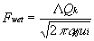
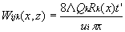
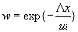

4.8 WET DEPOSITION
The
detailed calculation of the scavenging of contaminants from individual
plumes requires a complex model with a number of inputs that are difficult
to define. The MEPAS calculation of climatological scavenging of contaminants
is accomplished using a simpler approach (Slinn 1976). The climatological
calculation used in MEPAS provides estimates of wet deposition rates. This
computation accounts for the major factors changing the wet deposition
for the various combinations of releases and receptors between sites.
The wet deposition involves integration of the scavenged material over
height. Hanna et al. (1982) expresses the integrated wet flux (Fwet)
for rain falling completely through a Gaussian plume as

(64)
where
Fwet = scavenged flux (g/m2-s)
Ë = scavenging coefficient (1/s).
Equation 64, converted to a sector-averaged
form for the total deposition, is expressed as

(65)
This relationship for Wisk(x,z) is input for Equation 58. The
contaminant removal term, Rk, is determined from Equation 51.
The scavenging coefficient for a specified volume of a plume is defined
as the airborne contaminant removal by precipitation scavenging. Hanna
et al. (1982) point out that the scavenging coefficient varies with the
rainfall type and rate, saturation conditions, and contaminant characteristics.
The MEPAS implementation of this model assumes a neutral stability for
all precipitation conditions. The wet deposition plume depletion term (w
in Equation 51) is obtained using

(66)
Hanna
et al. (1982) points out that this method applies to monodisperse particles
or to highly reactive gases that are irreversibly scavenged. As such this
method is limited to providing upper-limit estimates that maximize the
near-source wet-removal rates.